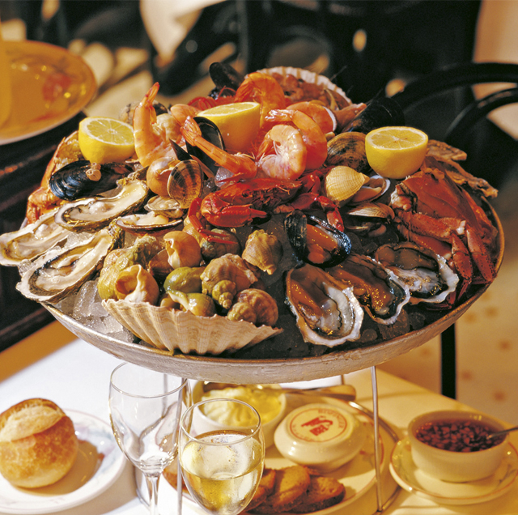
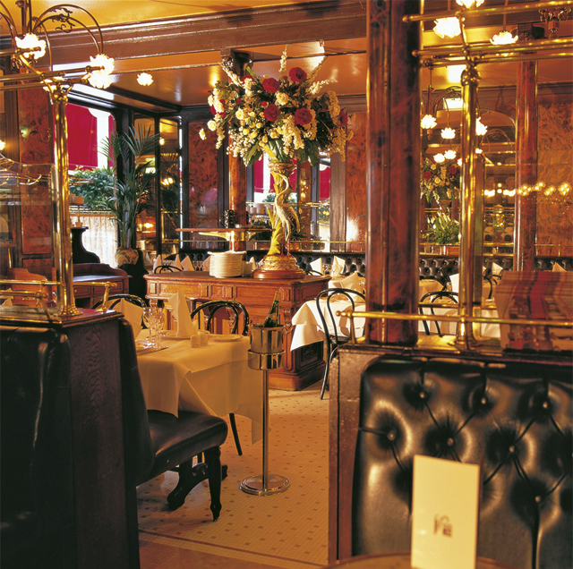

The Bofinger at the Place de la Bastille is the oldest brasserie in Paris. It began as a converted coal merchants’, where Frédéric Bofinger, its first owner and an Alsatian, initially offered only charcuterie, that is cold selections of sausages and meats, along with the first fresh beer on tap in the city. Later the menu became more elaborate, yet still retained its Alsatian emphasis. The traditional choucroutes are still firmly on the menu today. Suaerkraut can be enjoyed with knuckle of pork or black pudding, but also with fine seafood. On top of this, gourmets can find their heart’s desire here, from pâté de foie gras with brioche and the sweetbread terrine with morel mushrooms to a sensational array of seafood. A taste of what is to come is offered in the oyster and scallop buffet outside on the street. Head chef Georges Belondrade offers delicious fish and shellfish delicacies, with fresh produce delivered daily. Inside, the restaurant exudes an aura of times gone by. G. Néret and E. Royer created the stained vaulted glass ceiling in belle epoque style, and the painting by the Alsatian artist Hansi is also a favourite of many guests. In the 1980s, everything was completely refurbished and, after a lull lasting decades, the Bofinger enjoyed a dazzling rebirth.


{kind=link}
{kind=link}